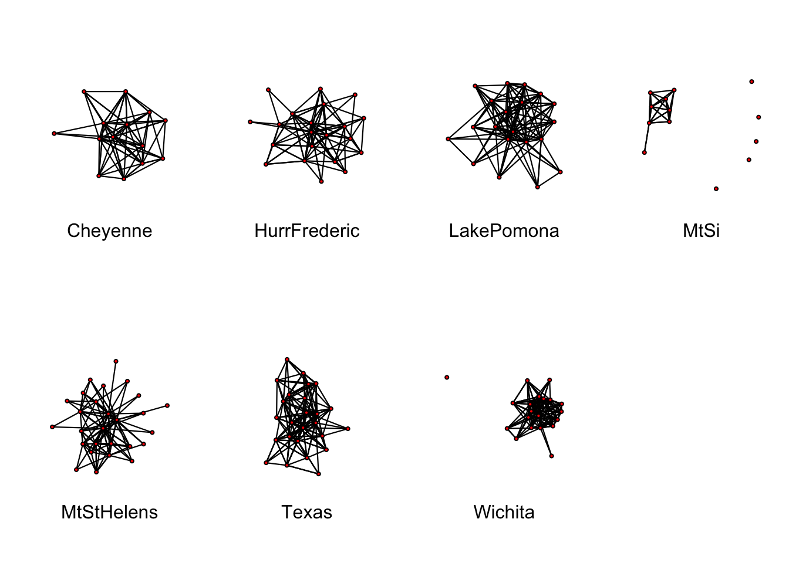
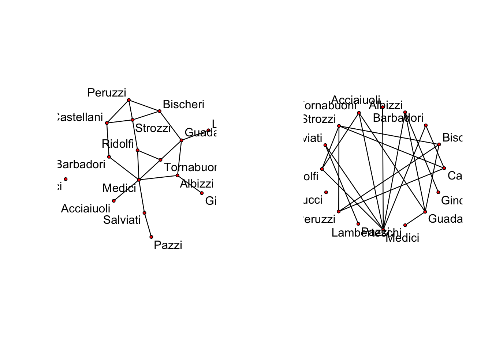

Chapter 2 Networks and Network Thinking
2.1 Overview
Network science and social network analysis provide both a theoretical and methodological foundation for understanding our social world. Butts (2008) explains the social network field as follows:
The social network field is an interdisciplinary research program which seeks to predict the structure of relation- ships among social entities, as well as the impact of said structure on other social phenomena. The substantive elements of this program are built around a shared chore of concepts and methods for the measurement, representation, and analysis of social structure. These techniques (jointly referred to as the methods of social network analysis) are applicable to a wide range of substantive domains, ranging from the analysis of concepts within mental models (Wegner (1995),Carley (1997)) to the study of war between nations (Wimmer and Min (2006))
2.2 Introduction to Network Concepts
To begin our journey into the nature of social networks, we first must define what a relationship entails.
Example 2.1 An example of a relationship is students alma matters. I.e. Bill graduated from the University of California, Irvine and Jane graduated from University of California, Irvine so they have a this “alma matter” relationship; however, Bob graduated from University of Michigan so he is not have this “alma matter” relationship with Bill and Jane.
Other examples of relationships can be communication, acquaintanceship, sexual contact, proximity, migration rate, alliance/conflict, etc.Focus: the properties and consequences of relations (rather than individual properties) * Entities can be persons, non-human animals, groups, locations, organizations, regions, etc. * Relationships can be communication, acquaintanceship, sexual contact, proximity, migration rates, alliance/conflict, etc. * Social network analysis: the study of relational data arising from social systems
Definition 2.3 Network: a collection of entities (commonly called nodes or vertices), together with a set of relations on those entities (often called edges or ties).
- Entities: nodes, or vertices
- Relations: edges, or ties (sometimes authors will distinguish between tie and edge, however this is somewhat uncommon)
- Focus on dyadic relations
- Directed vs. undirected
- May be signed or valued
Definition 2.4 Graph: a set of vertices (\(V\)) together with a set of edges (\(E\)) – mathematical representation of social structure. Typically a graph, \(G\), is define as the set, \(G=(V,E)\)
Below is R code for generating a dyad and ploting it. The vertex set coorisponds to the number of rows/columns and the edges (relationships) to the cells in the matrix. More on this in the next section.library(sna)
g<-matrix(1,nc=2,nr=2)
gplot(g)2.2.1 Set theoretic notation versus Matrix Notation
A nework is often represented as a mathematical graph (\(G\)), such that \(V= \{v_1,\dots,v_n\}\) and \(E\) is the set of \(i,j\) vertices that have a relation. \(i,j\) can be ordered \((i,j)\) or unordered \(\{i,j\}\). Ordered ties represent directed relations (e.g., sending a package) and unordered represent a recipricol relation (e.g., a facebook friendship). Alternatively, graphs can be represented simply as a square matrix of binary values (i.e., does a relation exist between \(i,j\) vertices?). This matrix is known as an adjacency matrix (\(A\)). An adjancy matrix is binary in the cells (i.e., 1 or 0), typically we exclude self ties (i.e., \(i,i\) cells are 0) and is always square. If it is not symmetic then it is a directed graph, and if it is symmetric it is known as undirected graph.
Let’s visualize an adjancy matrix in R.
g<-rgraph(10)
g2.3 Relational Data
Definition 2.6 One Mode data – Networks with one vertex class (ie organizations, individuals, concepts, etc.)
Represented by adjacency matrices. Vertices on rows and columns, \(A_{ij}=1\) if i sends a tie to j, else \(A_{ij}=0\). Can contain edge values, where applicable (\(A_{ij}\) is value of i,j edge). Symmetric in undirected case, diagonals represent self-ties, often treated as undefined.R code:
library(network)
data(emon)
#help(emon)
n <- ncol(as.sociomatrix(emon[[4]]))
colorn <- rainbow(n, start=.7, end=.1)
vname <- get.vertex.attribute(emon[[4]],attrname="vertex.names")
plot.network(emon[[4]], usearrows=FALSE, displayisolates=FALSE,vertex.col=colorn,main="Mt. Si SAR EMON")
legend("topleft",legend=vname, col=colorn, pch=19,bty="n",cex=.5)Edge list a,b; c,d; e,f; etc incident matrices
2.3.1 Some Types of Relationships
- Conceptual: shared or antithetic properties
- similarity/difference in individual attributes, correlation among variables, inclusion/exclusion, surface matching on proteins
- Co-catagorical: shared membership
- organizational co-membership, event co-participation, co-occurrence of words within texts
- Nominational: resulting from the behavior of ego +attributions of friendship/enmity, kinship (fictive or otherwise), causal narratives
R code
load("data/cow_adjmats.Rdata")
mid.network<-as.network(mid[[1]])
plot.network(mid.network,displayisolates=FALSE, label=cow.system$State.Abb[(cow.system$Year==1993)], boxed.labels=FALSE, label.cex=.5, main="COW Militarized interstate disputes 1993")R code
data(emon)
imar<-c(5, 4, 4, 2) + 0.1
nmar<-.75*imar
par(mfrow=c(2,4), mar=nmar)
for(i in 1:7){
plot.network(emon[[i]], usearrows=FALSE, vertex.cex=1.5)
mtext(names(emon)[i],side=1, edge.col="grey")
}
- Interpersonal networks
- Communication - e.g. WTC responder radio communications (aggregate and dynamic
- Friendship - e.g. perceived and estimated friendships among managers
- Interaction in task performance- e.g. WTC police reports
- Co-Participation- e.g. research group co-participation in a large research project
- Citation networks
- Authorship- e.g. authorship of articles in a large research project
- hyperreferences- e.g. citations among weblogs
- Functional Citations- e.g. function calls in the linux kernel
- Conceptual networks
- Interval graphs- e.g. life history graphs
- Mental models- e.g. student concept maps for ``information systemÓ
- Entailment structures- e.g. latent structure in US religious belief; dependencies within the Bank Wiring Room
A special case of a node not attached to any other vertex is known as an isolate and will be carefully definee as a component of size 1. We will discuss this more in the future.
2.4 STATNET Overview
Using the network package to handle Network objects.
Basics in getting and loading a network example data-set:
library(network) # Make sure that network is loaded
# help("network-package") to get started.
data(package="network") # List available datasets in network
data(flo) # Load a built-in data set; see ?flo for more
flo # Examine the flo adjacency matrixFirst find the files “flo.paj” and “floadj.txt” that come within the network package:
First we will attempt to bring in a .txt file:
flo.paj.location <-"http://vlado.fmf.uni-lj.si/pub/networks/data/GD/gd98/A98.net"Try reading in a Pajek file:
flopaj <- read.paj(flo.paj.location)Write to table
write.table(flopaj[,],file="data/floadj.txt")
floadj.txt.location <-"data/floadj.txt"Then read them into adjacency matrix form:
floadj <- read.table(floadj.txt.location,header=TRUE)
floadj Some other common commands and calls for network class types:
names(flopaj) # This is a project file, with networks and other data
names(flopaj$networks) # See which networks are in the file
nflo2 <- flopaj$networks[[1]] # Extract the marriage data
nflo2 # Examine the network objectLoad “native” R data file( note, may need to change directory).
load("data/nmlec1.Rdata") # Load example data
mids_1993 # Examine one of the imported objectsExample 2.6 Other useful R commands in the network package. As always one can delve deeper into these functions via R’s help manuals (either ? or help() ).
One of the first things we should look at is network objects, here is a quick example of how to create a network object and pull out some basic network properties.data(flo)
nflo <- network(flo, directed=FALSE)
nflo # Get a quick description of the data
summary(nflo) # Get an overall summary
print(nflo) # Simple print method
network.dyadcount(nflo) # How many dyads in nflo?
network.edgecount(nflo) # How many edges are present?
network.size(nflo) # How large is the network?
as.sociomatrix(nflo) # Show it as a sociomatrix
nflo[,] # Another way to do itAn example plot generated by the plot.network() command. The plot on the left is the default Fruchterman and Reingold’s force-directed placement algorithm, where the plot on the right is a circle output. More layouts and information can be found with gplot function.
par(mfrow=c(1,2))
plot(nflo,displaylabels=T,boxed.labels=F)
plot(nflo,displaylabels=T,mode="circle", boxed.labels=F) 
```
Generating an empty network can be useful for a number of things.
# Create an empty graph with 5 vertices
nempty <- network.initialize(5)
nempty # Compare with nflo Now, we can look at some basic network properties such as edges.
g <- network.initialize(5) # Create an empty graph
g[1,2] <- 1 # Add an edge from 1 to 2
g[2,] <- 1 # Add edges from 2 to everyone else
m <- matrix(0, nrow=5, ncol=5)
m[3,4:5] <- 1 # Add entries from 3 to 4 and 5
g[m>0] <- 1 # Add more entries
g[,]Some more useful R tricks with adjancy matrices.
# Delete edges
g[3,5] <- 0 # Remove the edge from 3 to 5
g[,] <- 0 # Remove all edges
#Testing adjacency
nflo[9,3] # Medici to Barbadori?
nflo[9,] # Entire Medici row
nflo[1:4,5:8] # Subsets are possible
nflo[-9,-9]# Negative numbers _exclude_ nodes
m <- matrix(1:16^2, nrow=16, ncol=16)
nflo %e% "boo" <- m # Value the marriage ties
#Retrieving edge values
list.edge.attributes(nflo) # See what's available
nflo %e% "boo" # Use the %e% operator
as.sociomatrix(nflo,attrname="boo") Now, we can look at vertex attributes (these include things like node level covariates).
#Add some attributes
nflo %v% "woo" <- letters[1:16]
nflo %n% "zoo" <- "R is TanFastic!"
#Listing attributes
list.vertex.attributes(nflo) # List all vertex attributes
list.network.attributes(nflo) # List all network attributes
#Retrieving attributes
nflo %v% "woo" # Retrieve the vertex attribute
nflo %n% "zoo" # Retrieve the network attribute
# ?attribute.methods```
References
Butts, Carter T. 2008. “Social Network Analysis: A Methodological Introduction.” Asian Journal of Social Psychology 11: 13–41.
Wegner, D.M. 1995. “A Computer Network Model of Human Transactive Memory.” Social Cognition 13 (3): 313–39.
Carley, Kathleen M. 1997. “Extracting Team Mental Models Through Textual Analysis.” Journal of Organizational Behavior 18: 533–38.
Wimmer, A., and B. Min. 2006. “Rom Empire to Nation-State: Explaining Wars in the Modern World,” American Sociological Review 71 (6): 867–97.